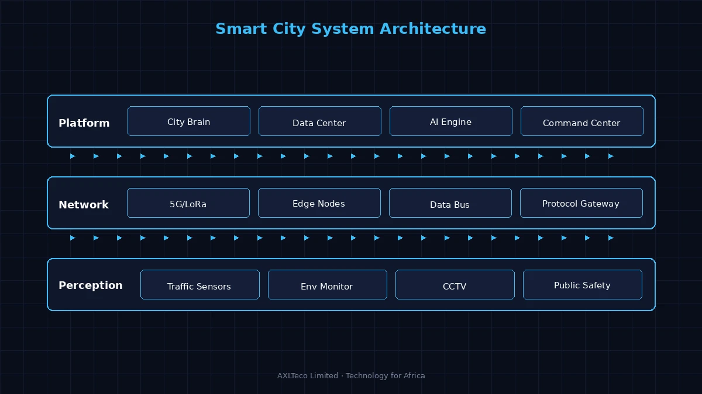
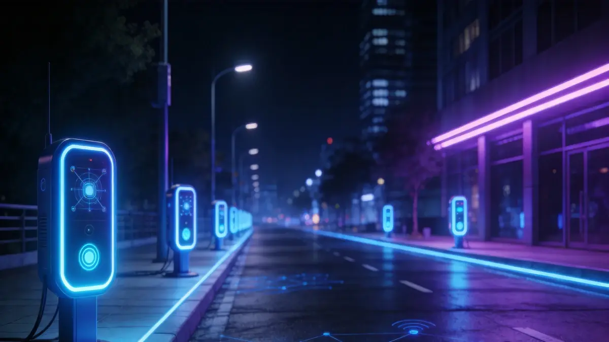

System Architecture

Smart City Digital Twin Architecture
The smart city solution builds on the CIM (City Information Modeling) digital base, establishing a "One Platform, Two Centers, N Applications" overall architecture. The city brain platform integrates urban operational data, with command and data centers driving each other to support N smart application scenarios including transportation, security, environmental protection, and government services.
Solution Architecture

Digital Twin City Architecture Diagram (Source: Digital Twin Reference Materials)
Solution Components
Core Capabilities
Application Architecture
The smart city platform adopts a cloud-native microservices architecture: the bottom layer is the urban IoT perception access layer; the middle layer consists of the data and AI middle platforms; the upper layer contains business applications for various government departments. Through a unified city operating system, cross-departmental data interoperability and business collaboration are achieved, breaking down "information silos."
Application Scenarios

Smart City Scenarios
Applicable to urban operation monitoring, emergency command dispatch, traffic optimization, environmental monitoring, public services, and urban planning simulation. Through digital twin technology, urban plans can be rehearsed in virtual space to reduce actual construction risks and costs.
Solution Advantages
Based on digital twin technology, the solution achieves "virtual-physical mapping" of the city, enabling pre-simulation of urban planning schemes in virtual space to reduce actual construction risks. The platform has elastic scalability, supporting tiered construction from single blocks to entire cities with controllable investment and rapid results.
Solution Value
Improve the refinement level of urban governance, promote "one-network government services" and "one-network urban management." Through data-driven optimization of public resource allocation, improve citizens' quality of life and lay a digital foundation for sustainable urban development.
Project Practice
AXLTeco actively participates in Africa's urban digitalization, providing smart transportation, security surveillance, and low-voltage intelligent infrastructure services for cities like Lagos, accumulating rich city-level project implementation experience.